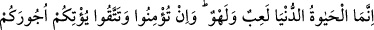
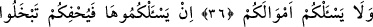
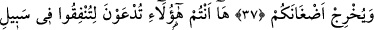
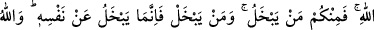
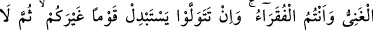
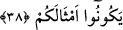
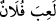

ALLAH YOLUNDA
HARCAMAYA ÇAĞIRILIYORSUNUZ
36. Dünyâ hayâtı, bir oyun ve eğlenceden ibarettir. Eğer inanır, (günâhlardan)
korunursanız (Allah) size mükâfâtlarınızı verir ve sizden (bütün) mallarınızı
istemez.
37. Eğer onları isteseydi de sizi sıkıştırsaydı, cimrilik ederdiniz ve kinlerinizi
ortaya çıkarırdı (Allah’ın Elçisine kin beslemeğe başlardınız).
38. İşte sizler, Allah yolunda harcamağa çağrılıyorsunuz; ama içinizden kimisi
cimrilik ediyor. Cimrilik eden, kendi nefsine karşı cimrilik etmiş olur. Allah
zengindir, sizler fakirsiniz. Eğer yüz çevirecek olursanız, Allah, yerinize başka bir
toplum getirir de onlar sizin gibi olmazlar.
Basiret ehline göre “dünyâ hayâtı, bir oyun ve eğlenceden ibarettir.” Bâtıldır,
aldanmadır, önemsizdir, sebatsızdır. Geçici bir oyun ve değersiz bir meşgûliyetten
başka bir şey değildir. Ve yalnız birkaç günden ibarettir. Ey insanlar “eğer” inanmak
vacip olan esaslara “inanır, (günâhlardan)” küfür ve mâsiyetlerden “korunursanız
(Allah) size mükâfâtlarınızı” îman ve takvânızın ve yarışanların yarıştığı güzel
işlerinizin sevap ve mükafatını “verir ve” Allah “sizden” hayat programınızı bozacak
bir şekilde “(bütün) mallarınızı istemez.”
Şâyet kişi yaptığı işten doğru bir maksadı kastetmemiş ise
(la’ibe fülân:
falanca oynadı) denilir. Lehv (eğlence) ise insanı maksud ve mühim olan şeyden meşgul
edendir.
Haberde şöyle gelmiştir: Allah Teâlâ bir melek yaratmıştır. O melek kelime-i
tevhiddeki “lâ ilahe”nin “lâ”sını çekmektedir. İllallah deyince kıyamet kopacaktır.
Bunda şuna işâret edilmektedir ki dünya baştan sona hakikatte mevcud değildir. Dünya
sadece ârizî ve zâil olacak olan bir şeydir. Ezelî ve ebedî olan yalnız Allah’tır. Âyette